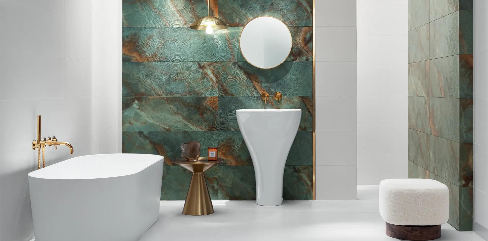

Márkák
A márkák a kínálatunk mögött.
Lengyel, spanyol és olasz gyárak fal- és padlóburkolatai, valamint 2020 óta a saját Flame márkanév alatt gyártatott lapok.

Cerrad
A természet a leggazdagabb forrása az inspirációnak. Ezt bizonyítja a Cerrad több, mint három évtizedes sikertörténete is, amiben a modern technológia és a természet iránt érzett tisztelet és lelkesedés összehangjából világszínvonalú és díjnyertes burkolólapok sokasága született meg. A természetes vagy éppen a modern felületek mögött kifinomult gres és klinker portfolió áll, kivételes műszaki tartalommal, sokféle formátummal és felületi minőséggel. A Cerrad a világ több, mint 50 országában értékesíti termékeit, ezek között a magyar piac különleges pozíciót tölt be. A cégcsoport 6 üzemében évente mintegy 30 millió m2 hidegburkolatot gyárt a legkisebbtől a legnagyobb lapméretekig. A különböző gyártástechnológiák lehetővé teszik, hogy a legkifinomultabb otthonokba és nagy igénybevételű közösségi terekbe is igényes burkolatok kerüljenek. A fa különlegesen erezett struktúrája, a beton minimalista felülete vagy a természetes kő szépsége a fő iránymutatók a Cerrad jelenlegi termékpalettján és a jövőbeli termékfejlesztés irányait tekintve egyaránt.

Flame
A FLAME a Kerko Hungária Zrt. saját márkás termékeit tömörítő márkanév, mely 2019 óta van jelen a magyar piacon. A FLAME kollekciók ihletet adhatnak a fürdőszoba, a nappali, a konyha, a hálószoba, vagy a terasz megtervezéséhez. Fürdőszoba csempe és padlólap családjainkkal épp úgy megvalósítható a klasszikus, mint a modern vagy a minimalista stílus ügyfeleink otthonaiban. Kínálatunkban a legkiválóbb minőségű porcelánlapok találhatók meg, melyek lengyel, spanyol, olasz dizájnstúdiók munkájának eredménye.
A FLAME alatt olyan neves gyártók termékeit sorakoztatjuk fel, mind a Cerrad, a Paradyz, az Undefasa, Keros, Tubadzin és Prissmacer. Az európai gyártókon túl távol-keleti, indiai padlólapokat is kínál évről-évre bővülő választékkal. A burkolatok kiválasztásánál célunk magas minőségi színvonalon a magyar piac, a magyar igények kiszolgálása hiánypótló céllal.
Találkozzunk a Kerko Flame partner fürdőszobaszalonokban!
Undefasa
Kerámiagyár 1967 óta
Családi vállalkozásként alapítottuk a gyárat 1967-ben. Azóta eltelt idő során az Undefasa a virágzó spanyol kerámiaipar szívébe vívta ki megbecsült pozícióját. Az évek során megszilárdítottuk helyünket azzal a meggyőződéssel, hogy minden termékünk valóban tükrözi a jól megmunkált kerámia hagyományát és szenvedélyét. Ezeket az értékeket hosszú történelmünk, tapasztalatunk, kemény munkánk és elkötelezettségünk formálta.
A kerámia-szenvedély
A kerámia iránti szenvedélyünket tükrözi az az elkötelezettségünk, hogy egyedi termékeken keresztül közvetítsük a minőséget és a biztonságos értékeket az otthonok számára. Számunkra a minőséget és az értéket olyan kiváló és sokoldalú formatervezésű termékek alkotják, amelyek tartósak és változatlanok maradnak az idő múlásával, mind stílusuk, mind anyagaik ellenálló képessége tekintetében.
Hagyomány
Szilárdan ragaszkodunk a hagyomány és a kerámia iránti szenvedély értékeihez, amelyek minden termékünkben tükröződnek.
Vállalati kultúra
Az Undefasa-nál az emberi tényező alapvető fontosságú vállalati kultúránkban. Szilárdan hiszünk abban, hogy csak egy erős kultúra megteremtésével tudunk tartós értéket teremteni, a múlt tapasztalataira építve és azokat továbbfejlesztve. A design és az innováció koncepciói így jelentősebb értéket nyernek, mivel együtt élnek a vállalat emlékezetével és örökségével.
A kiválóságra való törekvés
Integrált irányítási rendszerrel dolgozunk, amely a folyamatos fejlesztésen alapul a termelési folyamat minden fázisában, a koncepciótól és a tervezéstől az anyagaink forgalmazásáig és értékesítéséig.
Állandó fejlődésben...
Családi tulajdonban lévő vállalatként folyamatos fejlődésen és alkalmazkodáson mentünk keresztül, miközben szembesültünk a változó környezettel. Történetünk során megtanultunk rugalmasan reagálni a kihívásokra, mindig a kiválóságra törekedve.
Küldetés és értékek
Az Undefasa egy a múltban gyökerező és a jövőbe tekintő vállalat. Arra törekszünk, hogy új ötletek, innováció és design generálásával megfeleljünk a fogyasztók elvárásainak és jelenlegi igényeinek. Elkötelezettség a környezet iránt Az ISO 14001 és ISO 50001 tanúsítványok igazolják a fenntarthatóság iránti elkötelezettségünket, a környezeti teljesítmény javítását az erőforrások hatékonyabb felhasználása és a hulladékcsökkentés
révén. Az Undefasánál alapvető célként tekintünk a technológia és a fenntarthatóság konvergenciájára. Támogatjuk olyan projektek fejlesztését, amelyek technológiai innováció révén minimalizálják környezeti hatásukat.
Alapelvünk, hogy olyan termékeket tervezzünk, amelyek velünk együtt léteznek, értéket adnak hozzá, és lehetővé teszik számunkra egyedi terek létrehozását.
Tubądzin
Tubądzin Csoport – a kerámiaipar innovációs éllovasa
A Tubądzin Csoport Lengyelország egyik legjelentősebb kerámialap gyártója, amely immár 40 éve határozza meg a formatervezés és a technológia trendjeit. A nagyformátumú lapok (120 x 275 cm-es méretig) gyártásának úttörőjeként korszerű megoldásokat kínál mindenféle térhez – a fürdőszobáktól kezdve a homlokzatokon át a bútorokig.
A vállalat megalakulása óta egész végig a fejlődésre törekszik. 2016-ban indította el Közép-Európa egyik legmodernebb gyártóüzemét, míg a Continua+ és az ATM 36 szárító technológiákbaba a történő beruházás lehetővé teszi az energiafelhasználás és a CO₂-kibocsátás jelentős csökkentését. A lapok természetes, nemes alapanyagokból készülnek, és egészségre ártalmatlan, környezetbarát színezőanyagokkal díszítik őket.
A Tubądzin Csoport korszerű gyárakkal és modernizált Logisztikai Központtal rendelkezik, amely a bővítést követően Lengyelország egyik legnagyobb és legfejlettebb ilyen létesítményévé vált, ezzel megduplázva a vállalat korábbi rakodási kapacitását.
A cég elismert alkotókkal (többek között Zień, Koziara, Siudmak) működik együtt, megrendezi a Tubądzin Design Awards versenyt, és aktívan tevékenykedik az oktatás, a kultúra és a környezetvédelem támogatása érdekében.

STN Cerámica
STN Cerámica – Innováció és minőség a kerámiaipar élvonalában
Az 1970-es években alapított STN Cerámica (korábban Cerámica Nulense) mára a világ egyik vezető kerámia burkolatgyártójává vált. A spanyolországi Chilches városában működő vállalat több mint 1 millió négyzetméteres ipari területen évente 100 millió négyzetméter csempét és padlólapot állít elő, termékeit pedig 130 országban értékesíti.
Az STN Cerámica termékei ötvözik a modern technológiát és a kifinomult dizájnt, kínálatukban megtalálhatók a gres és porcelán burkolatok különféle méretekben és stílusokban. A vállalat elkötelezett a fenntarthatóság mellett: 2024-ben több mint 105 000 tonna CO₂-kibocsátást csökkentettek, és jelentős beruházásokat hajtottak végre megújuló energiaforrásokba, például napelemek telepítésébe.
Az STN Cerámica megbízható választás mindazok számára, akik prémium minőségű, esztétikus és környezettudatos burkolatokat keresnek otthonukba vagy üzleti tereikbe.
Cersanit
A CERSANIT S.A. az egyik vezető, lengyel tőkével rendelkező gyártóvállalat az európai kerámia és szaniterpiacon. A csoport fő tevékenysége a fürdőszobák burkolásához és szerelvényezéséhez használt termékek (szaniter kerámia termékek, kerámia csempék, zuhanykabinok, akril kádak és zuhanytálcák, fürdőszobabútorok és fürdőszobai kiegészítők) gyártása és forgalmazása.
A Cersanit, az Opoczno, a Mito és a Meissen Keramik márkák tulajdonosa, a Cersanit Group új, innovatív gyártósort indított 2025-ben Wałbrzych-i gyárában. Az úttörő beruházás nemcsak az üzem termelési kapacitását növeli, hanem modern dekorációs technológiákat is bevezet, új lehetőségeket nyitva meg a kerámia falicsempék és a porcelán padlólapok tervezésében. Az új gyártósor kulcsfontosságú eleme egy több mint 200 m hosszú égetőkemence, amely jelenleg az egyik legnagyobb ilyen jellegű kemence Európában. Az új gyártósor 25%-kal kevesebb energiát fogyaszt, ami kisebb környezetterhelést jelent.
A Cersanit Capital Csoport a hazai és a nemzetközi piacon is aktív. A külföldi értékesítés bővítésének fő iránya a kelet-európai piacok (Ukrajna) és az EU tagállamainak piacai (pl. Litvánia, Lettország, Észtország, Csehország, Szlovákia, Magyarország, Románia, Bulgária, Németország, Franciaország, Nagy-Britannia, Írország, Svédország és Dánia). A Cersanit Capital Csoport lépéseket tesz külföldi piacokon való tevékenységének fejlesztésére. A Cersanit Csoport céljai: egy erős, páneurópai gazdasági szervezet kialakítása, amely lehetővé teszi vezető szerepének megőrzését a fürdőszobai szerelvények átfogó piacán, ami ennek következtében biztosítja a vállalat értékének hosszú távú növekedését.
Domino
Tubądzin Csoport önálló brandje – a kerámiaipar innovációs éllovasa elérhető áron
A Tubądzin Csoport Lengyelország egyik legjelentősebb kerámialap gyártója, amely immár 40 éve határozza meg a formatervezés és a technológia trendjeit. A nagyformátumú lapok (120 x 275 cm-es méretig) gyártásának úttörőjeként korszerű megoldásokat kínál mindenféle térhez – a fürdőszobáktól kezdve a homlokzatokon át a bútorokig.
A vállalat megalakulása óta egész végig a fejlődésre törekszik. 2016-ban indította el Közép-Európa egyik legmodernebb gyártóüzemét, míg a Continua+ és az ATM 36 szárító technológiákbaba a történő beruházás lehetővé teszi az energiafelhasználás és a CO₂-kibocsátás jelentős csökkentését. A lapok természetes, nemes alapanyagokból készülnek, és egészségre ártalmatlan, környezetbarát színezőanyagokkal díszítik őket.
A Tubądzin Csoport korszerű gyárakkal és modernizált Logisztikai Központtal rendelkezik, amely a bővítést követően Lengyelország egyik legnagyobb és legfejlettebb ilyen létesítményévé vált, ezzel megduplázva a vállalat korábbi rakodási kapacitását.
A cég elismert alkotókkal (többek között Zień, Koziara, Siudmak) működik együtt, megrendezi a Tubądzin Design Awards versenyt, és aktívan tevékenykedik az oktatás, a kultúra és a környezetvédelem támogatása érdekében.

Prissmacer
Prissmacer – Csempék, amelyek életre keltik a tereket
A spanyolországi Onda városában 2009-ben alapított Prissmacer Cerámica azóta is szenvedéllyel és kreativitással gyárt kiváló minőségű kerámia- és porcelánburkolatokat. Termékeik a mindennapi élet inspirációiból születnek, céljuk, hogy érzelmekkel teli, karakteres tereket hozzanak létre.
A Prissmacer kínálata a legújabb trendeket követi, legyen szó márványmintás, terrazzo, betonhatású vagy faerezetes felületekről. A gyár elkötelezett a fenntarthatóság mellett: több mint 40 000 napelempanellel rendelkezik, és termékei újrahasznosított anyagokból készülnek, VOC-mentesen, EPD-tanúsítványokkal ellátva .
A Prissmacer burkolatai nemcsak esztétikusak, hanem tartósak és praktikusak is, így ideális választást jelentenek otthonokba, üzlethelyiségekbe és közösségi terekbe egyaránt.
Stargres
Csempék, amelyek kiállják az idő próbáját
A Stargres Lengyelország egyik legnagyobb kőporcelán gyártója. Több, mint 30 éve látja el a lengyel és a nemzetközi piacokat a legmagasabb minőségű kőporcelán burkolatokkal. A vállalat portfóliójában beltéri és kültéri burkolatok találhatók, széles formátum- és szerkezetválasztékban. A vállalat legfontosabb prioritásai a magas minőség és a gyártás ökológiája, ezért a vállalat összes terméke megfelel a legszigorúbb lengyel és európai normáknak is.
Lengyelországban az első gyártó volt, aki bevezette a 2 cm vastag kőporcelán lapok gyártását, amelyeket STAR 2.0 néven ismerünk. Burkolataik folyamatos fejlesztésének eredményeként létrejöttek a STAR 3.0, azaz a 3 cm vastag kőporcelán lapok.
A modern dizájn és a minőségi gyártás és kidolgozás iránti elkötelezettség kombinációja teszi a Stargres termékeit vonzóvá nemcsak Lengyelországban és Európában, hanem Ázsiában és Afrikában is a vásárlók számára. A vállalat ügyfelei nagyra értékelik mind az esztétikát, mind a változó időjárási viszonyokkal és vegyi anyagokkal szembeni ellenálló képességet.
A Stargres csempék dizájnja a legkiemelkedőbb lengyel, spanyol és olasz design stúdiók munkájának eredménye.
Ceramika Color
A gyártó bemutatása a régi oldalon sem szerepelt.
Paradyż
A Ceramika Paradyż, családi vállalkozás, amely a legnagyobb hidegburkolat-gyártóként vezető szerepet tölt be Lengyelországban. Már 36 éve meghatározó alakjai vagyunk a design világának, emellett innovatív, egyedi formatervezésű és kiváló minőségű termékeket gyártunk és szállítunk ügyfeleinek világszerte. Vállalatunk közel 1500 munkavállalót foglalkoztat, létesítményeink között öt korszerű gyártóüzem és a legmodernebb, teljesen automatizált magasraktári tárolásra alkalmas logisztikai központ található. A Ceramika Paradyż termékkollekciói egymást kiegészítik, így kínálunk fal- és padlólapokat, klinker termékeket, üvegdekorációkat, slabeket illetve szinterezett köveket.
Cégünk sikeresen vezeti be termékeit a külföldi piacokra is, dinamikus értékesítési hálózatunknak köszönhetően. Termékeink egyre szélesebb vásárlói kör tetszését nyerik el, jelenleg több mint 50 országba exportálunk világszerte.
Vállalatunk elnyerte a 3 legnagyobb presztízsű nemzetközi díjat, termékeink többek között a Red Dot Design; iF Design; A’ Design zsűrijének elismerését érdemelték ki. Nagy hangsúlyt fektetünk termékeink és szolgáltatásaink magas minőségének megőrzésére, valamint a lehető legjobb munkaszervezésre. Az elnyert elismerések és díjak ösztönöznek bennünket a folyamatos fejlődésre és termékkínálatunk minőségének további javítására.
A vállalat megalakulása óta a fejlődésünkre összpontosítunk, és mindent megteszünk annak érdekében, hogy portfóliónkat folyamatosan a változó piaci igényekhez igazítsuk. Olyan úttörő technológiákat alkalmazunk termékeinknél, amelyekkel a lehető legtermészetesebb hatású kerámia burkolatokat tudjuk előállítani, pl: deep-ink, through-body veining, szinkron- és mikrostruktúra stb.

Keros
KEROS BULGÁRIA
A Keros Ceramica, mint a spanyol kerámiaburkolat-ipar élvonalbeli gyártója teljesen új gyárat épített Bulgáriában. 18 évvel ezelőtt kezdte ezt a projektet, és az elsők között volt a spanyol vállalatok között, amelyek külföldön építettek új gyárat. Fő céluk mindenek előtt az volt, hogy a legjobb szolgáltatást nyújtsa az ügyfeleik részére és a spanyol burkolatokat elérhető közelségbe helyezze az itteni partnerei számára is.
A legfontosabb számukra az ügyfelek első benyomása, amit leginkább a gyártó által nyújtott szolgáltatás és termékeinek minősége tükröz. A Keros Ceramica Ruse községben található (Bukaresttől délre 70 km-re), kiváló helyen, a Duna mellett és 150 km-re Várna kikötőjétől. A földrajzi elhelyezkedése miatt Rusét közép-európai stratégiai pontnak tekinthetjük.
A Keros termékkínálatában megtalálhatók a 25x50, 30x60 és 30x90 méretű fehér falicsempék, valamint a 19x56, 23x46, 25x25, 30x60, 33x33, 50x50, 60x60, 80x80 és 60x120 méretű porcelán padlólapok. Mindegyik „Made in EU” felirattal ellátva.